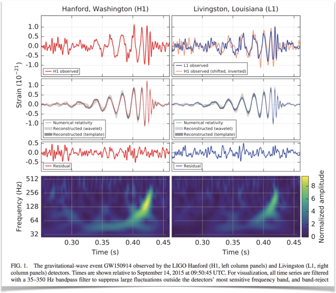

LIGO, the 2017 Nobel prize in physics, and wrapping up Makefiles¶
The 2017 Nobel Prize in physics was awarded this week to three leads of the LIGO collaboration for the discovery of gravitational waves.
This is the key figure from the original paper about event GW150914, Observation of Gravitational Waves from a Binary Black Hole Merger:

At the LIGO Open Science Center, the collaboration publishes the actual Jupyter Notebooks necessary to replicate the final steps of the analysis.
Note: if you're curious about the fascinating history behind this discovery, this article makes for good reading.
Next, we'll finish going through the Software Carpentry Make tutorial, and will take a peek at the Python Data Science Tools that for example the LIGO team used, before we dive deeper next week.